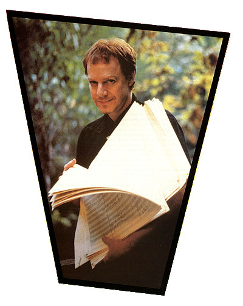
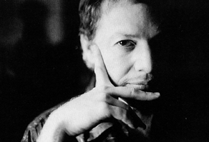

Danny's Big Adventure
Danny Elfman embraces the dark rites of film composition
Electronic Musician February, 1997, Vol.13, No.2
by Greg Pedersen

The odds are slim that even a tremendously talented musician will succeed in the brutally competitive film-scoring industry, but in 1985, Danny Elfman beat the odds. That year, after a lengthy stint as the leader of modern rock's commercially underappreciated wild bunch, Oingo Boingo, Elfman jumped ship to score Tim Burton's directorial debut, Pee Wee's Big Adventure.
That first stab at film composition was a smash success, and it was only the first in a series of scoring triumphs that include Batman, Beetlejuice, Mission Impossible, and Edward Scissorhands. Elfman has conquered the small screen, too, creating memorable themes for TV shows such as Tales From the Crypt and The Simpsons.
In fact, Elfman has been so prolific that he recently released his *second* compilation of film scores, Music for a Darkened Theater, vol.2.. The 2-disc set includes music from the composer's last ten films (including Sommersby, Black Beauty, Dolores Claiborne, and The Nightmare before Christmas); a score for Freeway, a low-budget film that he recently did for his best friend from high school ("I got paid a dollar," he says); and some unreleased material from television series such as Amazing Stories and Pee Wee's Playhouse.
As usual, Elfman is currently deluged with scoring projects. But as he braved a hellish deadline to complete the soundtrack for Burton's upcoming Mars Attacks!, he graciously took a break to share some insights with EM readers.

EM - What's it like being a film composer after spending so many years as a rock musician?
DE - Well, being a film composer requires a level of discipline that far exceeds anything I had to deal with as a musician making records. As a composer, you have to write every day. Period. You have to write approximately two minutes of music every single day whether you feel great or you feel like crap. And you have to be *inspired* every day.
And then there's always a certain point - as the clock is ticking toward the deadline when the score must be finished - where I feel like I'm stepping off a cliff. But I must have faith that when I take that step, something will appear at the very last second to catch me. That's what diving into a score often feels like.
EM - Are the deadlines really as tough as they're reputed to be?
DE - I try to get six weeks to write a score, with maybe a couple of extra weeks added so I can toy around with ideas. Sometimes you get that much time, and sometimes you don't. Part of being a successful composer is being able to work extremely quickly and effectively under pressure.
For example, in 1996, I scored four major films, so that was a particularly tight year for me. The workload on those movies - as with any film - depended upon how much the director wanted to get involved. Brian De Palma, who directed Mission Impossible, was very particular and wanted to hear every cue I wrote before we got to the scoring session (for orchestra). Gus Van Sant, on the other hand, did not need to hear every cue I wrote for To Die For. Then, of course, there are scheduling complications, such as when I was brought into Mission Impossible really late and was given just five weeks to complete the entire score.
EM - How do you begin working on the scoring process?
DE - I experiment with different ideas to get the score's thematic material laid out, and then I play them for the director. If he or she likes the direction the music is going, then sooner or later I'll have to start writing the score, or I'm in deep trouble.
Once I'm actually pumping out music, Steve Bartek gets dragged in. Steve does the final orchestrations after I have sketched out the music as elaborately as I can. He was the guitarist in Oingo Boingo and he has been my orchestrator since day one. When I got the Pee Wee's Big Adventure gig, I called him up and asked, "Steve, didn't you take an orchestrating class at UCLA once?" He answered, "Yeah," so I said, "Well, do you want to work on a film?" It was pretty funny, because Steve, Tim Burton, and I were all babes in the woods. It was the director's first film, the composer's first score, and the orchestrator's first orchestration.
EM - Do you still have to be able to write music, or does notation software render that skill superfluous?
DE - When I started scoring in 1985, you *had* to write music. There was no other way to communicate the parts to the musicians. These days, theoretically, if you perform and sequence the score close enough to the way you want it, you can print it out with some type of notation software.
However, the first time I tried notating a piece using MIDI, it didn't come out right. I realized that, when you're looking at a piece of music bar by bar, you learn some things about composing that you'd miss if you just hit a keystroke and printed it out. You add certain things and you think a slightly different way when you're working on paper. Although I have notated some scores directly through MIDI, I'm really glad I taught myself to write, because it is an important part of learning how to compose.
EM - What would you say is the most critical element of an artistically successful score?
DE - The ability to find the tone of a film can be the most important thing a film composer can bring to the job. Anybody can hold long chords with some dissonance and say, "That's tension." My eleven-year-old can do that! But can you nail the tone? That's the trick.
You see, sometimes people need help figuring out what kind of movie they're watching, and the music can nudge the viewers one way or another. Visually, viewers may be interpreting a scene a certain way, but because of the music they're hearing, they know they should be smirking or gasping.
For example, on To Die For, there was a dilemma because test audiences had trouble reading Nicole Kidman's character (who entices some wayward teens to murder her husband). Her character was strange because it was wicked but not evil in the way people are used to seeing a wicked character. As a result, audiences were very unclear about whether they were allowed to laugh or not because the film's plot revolved around murder. Obviously, we didn't want to wash over the dark side of what was happening in the movie, but we also wanted to keep the audience aware that they were watching a strange, quirky *comedy*. So I came up with a theme for the Nicole Kidman character that had a lightness to it.
EM - On that point, do film composers rely on specific instruments to produce a sense of happiness or dread?
DE - A talented composer can create a light or dark tone with *any* instrument. For example, strings typically have been used for romantic scores, and yet the person who most influenced my style, (composer) Bernard Herrmann, used strings for the most chilling score I know: Psycho. He also scored one of the scariest episodes of the original Twilight Zone television series using a harp, a glockenspiel, and a bass clarinet. These three very diverse instruments would not seem conducive to a scary score, but Herrmann used the juxtaposition of two light instruments against one dark instrument to produce something that was absolutely terrifying.
All the films that Herrmann scored had strong, identifiable patterns that he could twist and turn a million ways. His work taught me that there are no rules; there's no scary instrument or happy instrument.
EM - What types of things can lead you to uncover the right tone for a scene?
DE - Well, for Beetlejuice, the craziness of the character said to me: "Russian dancing, kicking out the legs, wild and drunken fun!" But for Edward Scissorhands, the fairy tale-like quality moved me to keep a sad undercurrent running throughout the music. Batman, however, was inspired by the set. When they were halfway done with filming, I was able to walk around the set at night and get the whole vibe of the movie. As far as the characterizations went, the Joker had a schizophrenic feel, so I didn't give him a specific theme. One moment, his music would be comic, the next moment it would sound kind of music box-like, and later there would be some dissonance.
In Batman Returns, the characters were more consistent, so we felt three of the four characters should have very identifiable themes. Consequently, the soundtrack turned out to be more of an odd-style, thematic score that switched back and forth between characters.
Catwoman was simple. I went right for a 1960's slinky, bending style of strings to convey a TV-show sound. I think Julie Newmar (who plated Catwoman in the original TV series) was my first crush! Both Catwoman and Batman themes are in a minor key, but hers is whimsical whereas his has tragic, quasi-operatic quality. Even thought the Penguin was evil, I wanted his theme to be evangelical, almost religious, with a bit of a hymn quality. I definitely wanted something that would easily turn comic or tragic.
Moving to the small screen, I very much wanted the tone of The Simpsons to reflect a 1960's family TV show. I wanted it to feel like it came out of another era, so I had some fun with that retro sound. I used xylophones, muted trumpets, and pizzicato strings.
EM - When you actually get down to composing a music cue to picture, do you usually follow any particular methodology?
DE - The system I developed during Pee Wee's Big Adventure is the one I use to this very day; I watch a scene until I start hearing a piece of music in my head. Then I'll time the scene out by locking my sequencer to the time code on the work video.
Let's say I'm hearing something that I feel is roughly 126 beats per minute (bpm). I'll input the SMPTE number for the beginning of the scene into Mark of the Unicorn's Performer and run 126 bpm click track locked to the video. Now I can experiment with tempos until I find what I like. Sometimes I'll use one tempo throughout a scene, and sometimes I'll use half a dozen, so it's also very important that I block out a tempo map for the entire scene.
At this point, I usually select a piano sound and sketch out the gist of what I want to happen against the scene musically. Much of this phase is improvised, but I'll typically end up with a rough sketch of what I want the music to do. For example, let's say there's a 4-bar melody that I really want to end on a door slamming, but it's a beat off. With Performer locked to the work video, I can move the phrase one beat and adjust things until I'm satisfied. Ultimately, I'll have a complete map of the scene, whether it's 20 measures or 220 measures. I've got all my hit points, meter changes, and tempo changes marked.
Before I start notating the score on paper, I'll write out that entire map on the top staff - even if it's twenty pages long - with all my bars and all my meter changes. Then I indicate everything I want hit with a system of little arrows. If the hit is on a downbeat it gets an arrow, and if it's on an upbeat it gets a crooked arrow. Now, I can just look at the entire music cue at the top of the page and see all my bar lines *and* everything I want to hit. This makes it easier when I begin writing the music down because I can make sure everything is metered correctly and, as I see a hit point coming up, make sure the music works up to that point. I'm actually writing the music and following the map on the top staff simultaneously.
EM - Many of your scores are not purely orchestral, however, so how do you incorporate synths and samplers into the orchestra cues?
DE - Up until last year, I used to pre-record all of my synth and percussion stuff on a Sony/MCI 2-inch, 24-track in my home studio - which I call "MIDI Hell" - and bring the tape to the scoring session. This tape, which is a recording of all the sequenced, nonorchestral instruments I want in the score, is then slaved to another 24-track machine that is used to record the orchestra.
The problem with this prelay system is that I have to lay the click tracks down on tape to ensure that the orchestra stays in sync with my pre-recorded tracks. Obviously, if we discovered any problems during the scoring session - or if we simply wanted to make some changes - we were stuck, because we couldn't adjust anything. The tracks were already on tape.
On Mission Impossible, it was pretty obvious that I needed more flexibility. So, instead of pre-recording my tracks on tape, I sequenced everything the way I normally would and brought along the synths, samplers, and sequencer to the session. Now Performer could receive time code from the video, and both my sequences and the orchestra could sync to a master click track created by the music editor. The tracking method is basically like this: the music editor builds a click using this tempo-processing software called Auricle, from Auricle Control Systems (for more information on how Auricle is used in scoring sessions, see "An Orchestral Escape" in the October 1996 EM). Performer is slaving to that click, and my sequences and the orchestra are playing together live and being recorded onto a master multi-track reel.
The flexibility of this system is great. For example, if we want to go a little quicker, say, bar 57 of the score, and notch up the tempo three bpms, we can lose two beats at the end to make up the difference. My sequences will simply follow whatever changes are made. Or if I want to change the tempo for the last eight bars and do an accelerando or a retard, I can simply edit the sequence on the spot.
With pre-recorded cues on tape, you can't do that because tape doesn't like to suddenly start changing speeds. I can also accommodate the director if he or she says, "I know that I told you come out here, but can you keep the music going for two more bars?" Once again, I just edit the sequence.
EM - Obviously you used quite an array of gear to presequence your scores. How much equipment do you actually bring to the scoring session?
DE - Typically, I'll bring a rig with an Apple Power Macintosh 9500 running Mark of the Unicorn's Performer, two Emulator EIV samplers with 128 MB of RAM. and two Roland S-760 samplers. Sometimes, I'll bring my other Emulator samplers; two 3XPs and two ESI-32s. The S-760s are playing guide stuff - the orchestral string and horn mockups that I've sequenced at home - that I can refer to, but these tracks seldom end up as part of the final score. The EIVs and the 3Xps are the machines actually laying down what will end up on the final score as the drums, percussion, and so on.
EM - Stylistically speaking, you've definitely broken convention and forged a unique style.
DE - I guess I *must* be breaking some rules, judging by the incredibly negative reactions from other composers and how frequently I hear my self imitated in other composer's scores!
EM - When did you start noticing composers imitating your approach?
DE - Right after Pee Wee's Big Adventure. For that film, I took an Italian, Nino Rota-like approach to an American comedy because I didn't like the fact that most contemporary comedy scores were so jazzy and poppy. So, of course, for about the next five years after Pee Wee's Big Adventure, all these comedies were suddenly becoming Italian!
And the imitations didn't stop after Pee Wee, either. My other scores that are imitated the most are probably Beetlejuice, Edward Scissorhands, and Batman.
Unfortunately, my generation of composers are by and large the most plagiaristic in the history of film. And, you know, composers have a wonderful way of rationalizing when they plagiarize another living composer.
For Example, John Williams' 2-note pattern for Jaws has been imitated thousands of times in tense scenes, but composers will simply rationalize that he didn't *invent* those two notes. Well, that doesn't matter! It was Williams who brought those two notes to a certain style of movie, and that's really the key issue.
The bottom line, I believe, is that it's just too easy to imitate your musical contemporaries. It's like taking a free ride. I think that composers who really care about the *art* of film composition will tend to draw more from the work of dead masters than from their living cohorts.
Inset to above article
Mission Impossible
"I just finished scoring my 26th film," says soundtrack wizard Danny Elfman, "and you'd think it would get easier, but I'm no less insane when I'm composing. And it's still just as hard to play music for th director for the first time!" However, for EM readers itching to enter the celluloid madhouse, Elfman offered some tips for surviving film-scoring gigs with a few shreds of your sanity (and stomach lining) intact.
Work those themes. When I'm starting a film, I make sure to compose a primary theme and at least two secondary ones that can be turned a number of different ways. I'll take the theme and figure out whether I can play half of it and still recognize it. Then, does it work in a major and a minor key? Can I turn it from funny to spooky? Can I cut it down to just three notes and still make it recognizable? These are some of the acid tests I put a theme through while I'm composing.
Be empathetic. The problem between every director and composer is that music is not easy to describe in words. You can spend hours talking about the score, but from the first moment the music is played, it either works or it doesn't. Then you realize all the talking you've done doesn't mean a thing! I try to approach everything from the director's eyes so I can compose something that's satisfying for me and yet still connects with the director.
Define the demo. Make sure the director understands that, in the demo stages of an orchestral score, the synth brass are going to sound like car horns and the synth strings are going to a have a peculiar edginess. I usually play the director a demo of another score, such as Batman, and say, "Here's the demo score I played for Tim (Burton), and here's the real thing. As you can hear, the real orchestra is going to sound ten times better than the synth orchestra."
Argue early. Show the director some themes and sketches as soon as you can and engage their opinions. If there are any problems, the goal is to duke it out in the studio during the writing process. You don't want conflict on the scoring stage when there are 90 musicians sitting there! Ideally, when you get to the orchestra session, all the director should be hearing is a better version of what he or she heard in your home studio.
Let the film conduct. Most film editors have an internal metronome going, so if you can tap into that rhythm, it will make scoring a lot easier and more fun. In fact, if you're out of sync with the film editor, it will be very hard to make the picture work. Once I lock into the editor's rhythm, though, it's easy to make all my hits match perfectly to the action onscreen.